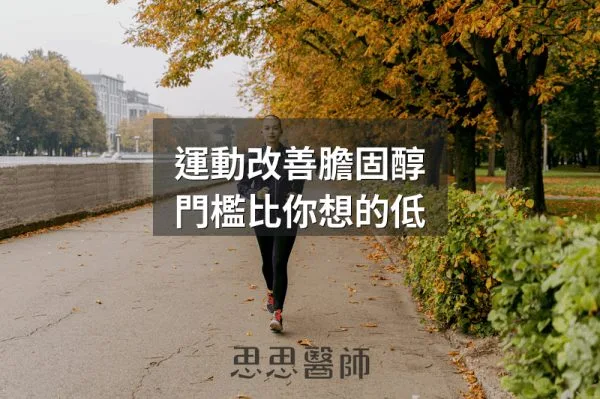

運動改善膽固醇，門檻比你想的低
2026-09-14
運動改善血脂的門檻遠低於傳統建議，每週約 60 分鐘中等強度活動就能顯著提升 HDL 並改善脂蛋白品質。

19 篇文章

運動改善血脂的門檻遠低於傳統建議，每週約 60 分鐘中等強度活動就能顯著提升 HDL 並改善脂蛋白品質。

2026 年 8 月的統合分析顯示規律爬樓梯者心血管死亡風險降低 39%，每天約爬 6 層樓效益最明顯，作者建議從一到兩層開始。

慢性發炎、胰島素阻抗、糖尿病、缺乏運動對心血管風險的影響不亞於 LDL，綜合評估代謝健康指標比單看膽固醇更重要。

沒有使用降脂藥物但 LDL 仍低於 50 mg/dL 需要往下追，可能反映甲狀腺亢進、肝功能受損或惡性腫瘤等潛在疾病。

降膽固醇藥吃了 LDL 仍不夠低時，可與醫師討論加 Ezetimibe，並搭配植物固醇、小檗鹼與可溶性纖維，已服他汀者應避開紅麴保健品。

輔酶Q10隨年齡增長自然下降，並被他汀類藥物進一步消耗，補充對心臟衰竭患者死亡風險有顯著改善作用。

因紐特人因低碳飲食無心臟病的說法流傳五十年，但實際研究顯示他們的心血管疾病發生率與其他族群相近甚至更高。

一位總膽固醇 705 mg/dL 的男性維持近七年，電腦斷層顯示斑塊體積為 0 mm³，作者以此個案介紹 LMHR 與脂質能量模型。

LDL 受抽血前約 72 小時飲食影響，Dave Feldman 改吃白吐司七天讓 LDL 從 296 降到 83 mg/dL，單次數值代表性有限。

運動過量可能增加冠狀動脈斑塊的形成，但運動對心血管長期保護益處仍然明確，適度最為重要。

飯後血液指標反映胰島素反應與代謝控制的實際狀況，往往比飯前數值更能說明真實身體狀態。

納豆激酶的正向結果主要來自每天 10,800 FU 的高劑量，3,600 FU 無效，文中提醒使用抗凝血藥物者不可自行補充。

HDL膽固醇超過80至100 mg/dL時，其膽固醇逆向轉運功能可能受損，反映全身代謝失調狀態。

血糖劇烈波動而非平均血糖值才是氧化壓力與血管破壞的關鍵驅動因素，餐後尖峰與快速下降會導致粒線體過度產生超氧化物。

減重後膽固醇升降取決於原始體型與飲食方式，精瘦者嚴格低碳可能因能量運送需求導致LDL升高，添加健康碳水通常能改善。

丙二醛（MDA）是脂質過氧化的終產物，血中濃度反映全身氧化壓力程度，比傳統抗氧化標記更敏感。

肥胖者的過量瘦素進入大腦會改變血管構造，過度激活交感神經，導致腎臟無法正常排鈉，所以高血壓與其說是鹽的問題不如說是脂肪的問題。

降血脂藥Statin會抑制輔酵素Q10的合成，高強度治療可導致血中濃度下降16%至54%，補充100至200毫克還原型Q10能改善肌肉酸痛。

納豆中的納豆激酶能有效溶解血栓，經常食用納豆可降低約25%的心血管疾病死亡風險，效果遠優於其他大豆製品。